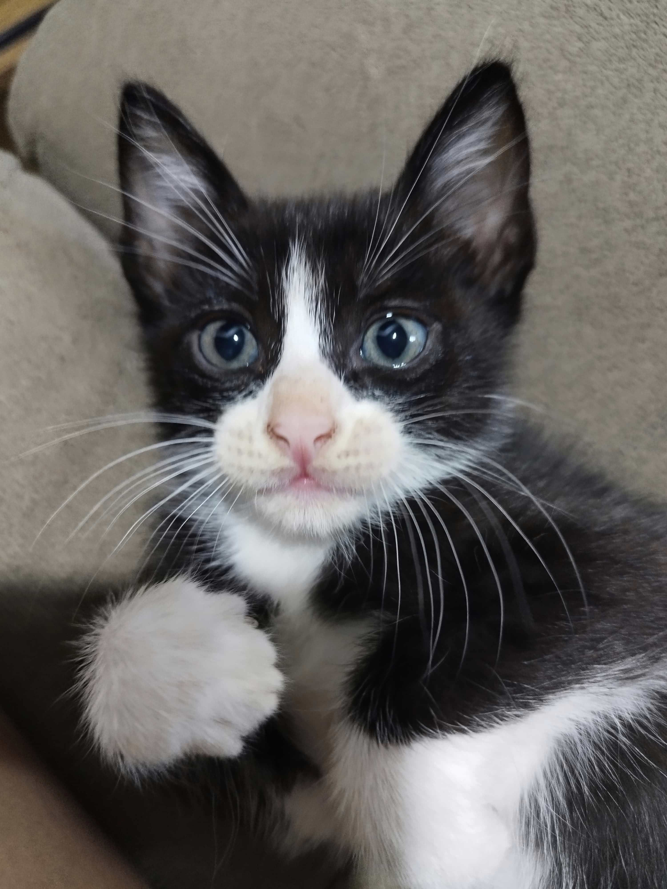
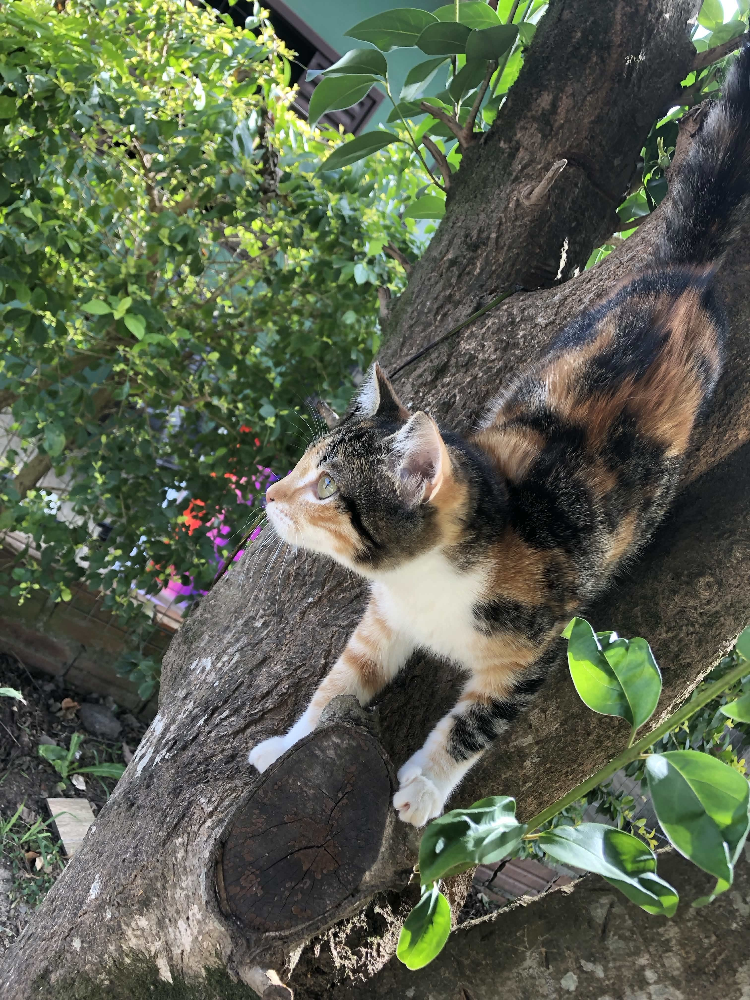
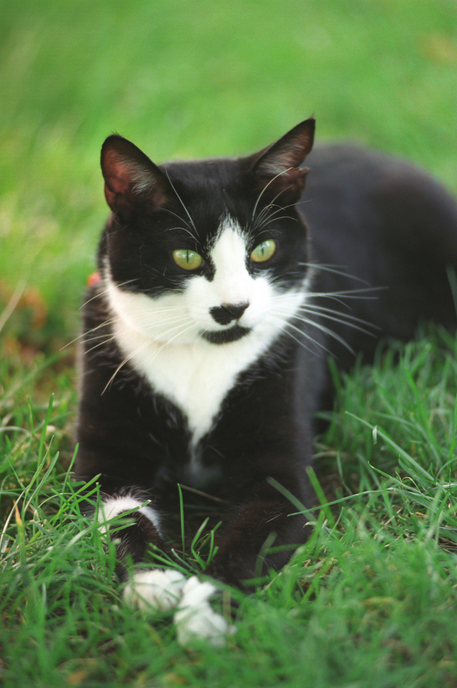
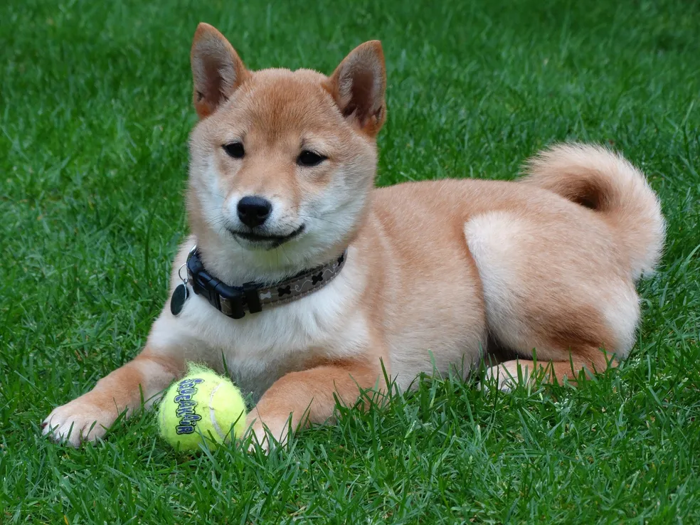
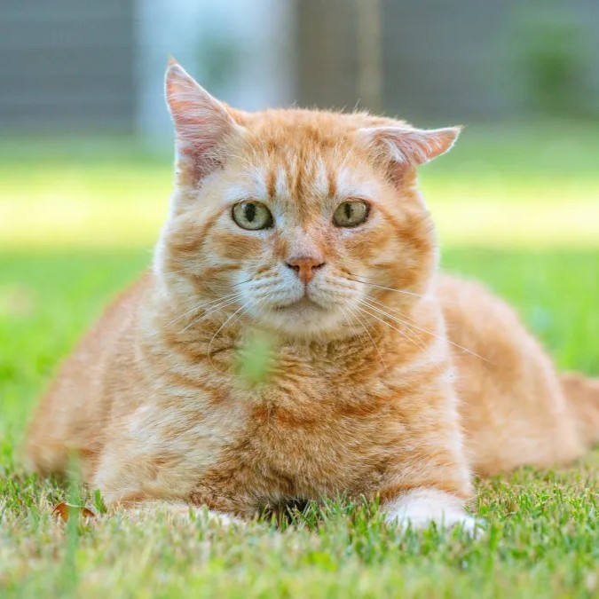

Encontre seu novo
melhor amigo
Cada patinha tem uma história.
Aqui você encontra cães e gatos que aguardam
uma segunda chance para receber amor, cuidado e um lar definitivo.


Pets em Destaque
Conheça alguns dos nossos pets que estão esperando por um lar amoroso




Ver todos os pets disponíveis para adoção
Como funciona?
Um processo simples e transparente para garantir uma adoção responsável
1
Encontre seu pet
Navegue e encontre o companheiro perfeito para você

2
Entre em contato
Entre em contato com a ONG ou protetor responsável pelo animal

3
Visite o pet
Agende uma visita para conhecer o pet pessoalmente

4
Complete a adoção
Assine o termo de adoção responsável e leve seu novo amigo para casa
Por que adotar?
Descubra os benefícios de trazer um novo amigo para sua família

Amor incondicional
Ganhe um companheiro leal que estará ao seu lado sempre

Salve uma vida
Dê uma segunda chance a um animal que precisa de um lar

Suporte completo
Receba orientação e acompanhamento das ONGs parceiras